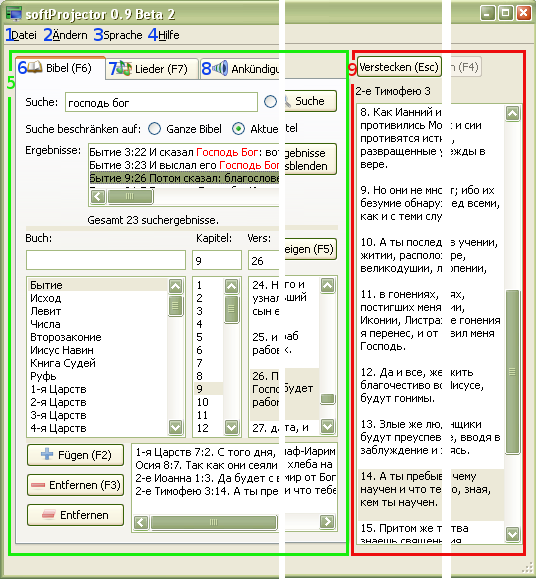

1.3 Programm-Überblick

softProjector besteht aus zwei Hauptteilen: Vorbereitungs- und Leinwandbereich. In dem
Vorbereitungsbereich werden Texte gewählt und durchschaut, bevor die auf der Leinwand
angezeigt werden.
1. Datei-Menü:
Enthält nur eine Option:  "Beenden,"
d.h. Beenden des Programms.
"Beenden,"
d.h. Beenden des Programms.
2. Bearbeiten-Menü:
Enthält Optionen für Bearbeitung der Lieder, sowie Verwaltung der Datenbank und allgemeine Einstellungen des Programms.
-
2.1
 "Neues Lied..."
"Neues Lied..."
In softProjector gibt es eine Möglichkeit, die das Hinzufügen der Lieder und Gesangbücher nach Wunsch des Benutzers erlaubt. Dafür gibt es eine Option Neues Lied.2.2
 "Lied bearbeiten..."
"Lied bearbeiten..."
Das gewählte Lied kann bearbeitet werden. Ausführlicher:2.3
 "Lied kopieren"
"Lied kopieren"
Das gewählte Lied wird in ein neues oder in ein vorhandenes Gesangbuch kopiert. existing songbook. Ausführlicher:2.4
 "Lied löschen"
"Lied löschen"
Das gewählte Lied wird aus dem Gesangbuch entfernt. Ausführlicher:2.5
 "Datenbank verwalten..."
"Datenbank verwalten..."
In softProjector ist importieren/exportieren/bearbeiten oder löschen der Bibeln und Gesangbüchervorgesehen.2.6
 "Einstellungen..."
"Einstellungen..."
Veränderung der Programm-Einstellungen. Einstellungen der Schriftart, Hintergrund, Bibeln u.ä. des Programms.
-
3. Sprache-Menü:
In softProjector ist eine Wahl der Sprache vorgesehen. Momentan sind drei Sprachen vorhanden: Englisch, Russisch und
Deutsch. Beim Ändern der Sprache ist kein Neustart des Programms erforderlich. softProjector
speichert die gewählte Sprache beim Beenden.
4. Hilfe-Menü:
Hier befinden sich Info und Hilfe über das Programm.
5. Vorbereitungsbereich:
Vor dem Anzeigen auf der Leinwand, muss ein Text gewählt und vorbereitet werden.
Nach dem Wählen des erforderlichen Textes, wird dieser auf dem "Vorschau-Fenster"angezeigt.
6.
 Bibel-Reiter:
Bibel-Reiter:
In diesem Reiter ist es möglich, das schnelle Suchen eines Verses, falls die Bibelstelle unbekannt ist,
sowie Vorschau und Anzeigen an der Leinwand, zu unternehmen. Ausführlicher: "Bibel
anzeigen".
7.
 Lied-Reiter:
Lied-Reiter:
Dieses Programm ist hauptsächlich dafür gedacht, die Lieder an der Leinwand anzuzeigen. In diesem Reiter kann
man ein Lied ganz leicht finden und anschauen. Bei Bedarf können Lieder bearbeitet, neue hinzugefügt oder gelöscht werden.
Mehr Info: "Lied Lieder".
8.
 Ankündigung-Reiter:
Ankündigung-Reiter:
softProjector ermöglicht es, einen beliebigen Text zu jeder Zeit anzuzeigen. Mehr Info:
"Ankündigung anzeigen".
9. Leinwandbereich:
Beim drücken auf "Anzeigen" -Knopf, wird die vorbereitete Information auf
"Leinwandbereich" angezeigt. Alle Änderungen, die in diesem Fenster unternommen wurden,
werden sofort auf der Leinwand angezeigt.